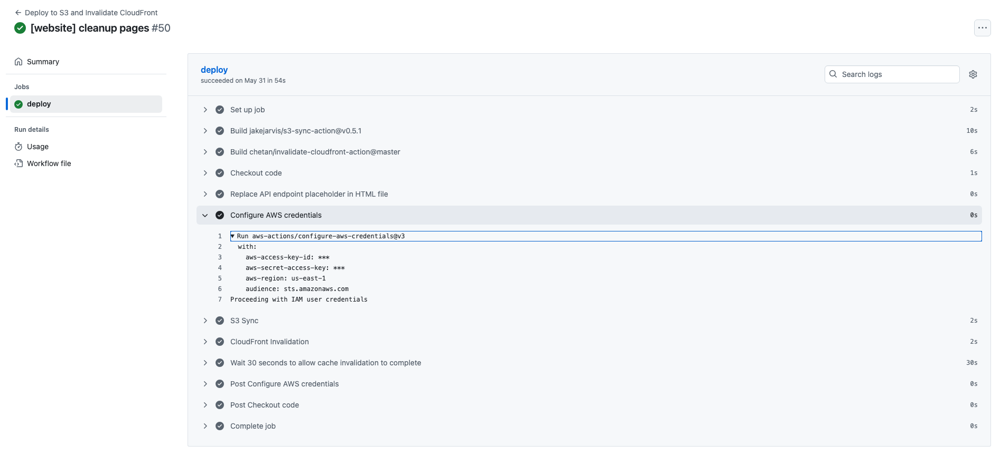
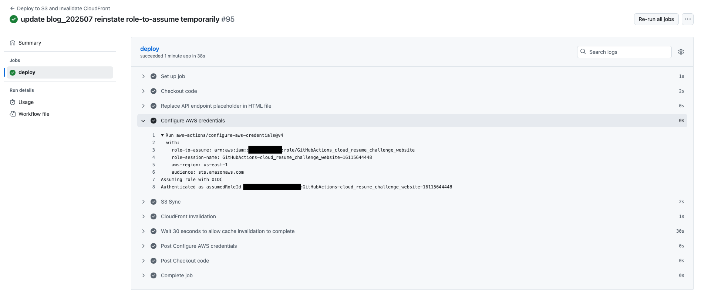

StocksCloud Website's GitHub Actions now use an OIDC and IAM Roles to improve security 🚀
In the previous blog (Future Improvements section), I recognised that a security issue existed within the StocksCloud website implementation. Long-lived credentials, in the form of access keys and secret access keys, were attached to IAM Users. When a workflow was triggered, the creds were used to call AWS STS (Security Token Service). STS generated and passed short-lived access tokens to GitHub Actions, which in turn were used by GitHub Actions workflows to use AWS services. I was happy that the IAM policies I had written earlier were good for reuse, because they allow access to only the services required by GitHub Actions workflows (principle of least privilege). What was not security best-practice was attaching these IAM policies to IAM users as Inline policies (directly attached). Using roles (with policies attached to the Role) is AWS recommended practice. Not creating and using roles was however only the minor part of the problem. The main crux of the matter is the long-lived access keys. Even though the keys were encrypted in GitHub Actions Secrets and accessed within the workflow using environment variables, the keys, if leaked, could provide a long-term access method into my AWS account. For this reason, they had to go! Here, I will dive into the details of the conversion to using AWS Roles with OIDC (OpenID Connect) and some GitHub-related growing pains.
Research 📖
As a starting assumption, I thought I'd need to setup an IdP (Identity Provider) using a service such as Cognito Identity Pools. This is untrue: Although it does perform a service to generate temporary credentials via STS, Cognito Identity Pools is aimed more at issuing human users with temporary access credentials, where the call sts:AssumeRoleWithWebIdentity is used alongside a WebID Provider such as a social network login. I did some digging into what I'd need to authenticate GitHub Actions with AWS and came across a AWS Security Blog by David Rowe, which got me started. A further GitHub Doc explains the OIDC concept from GitHub's perspective. I also owe a shout to this useful four-part video by Siba N. which explains much the same use case.
Getting Started 🏃
I quickly realised two things:
- As above, I didn't need to create an Identity Pool. All I needed on the AWS side was to create an IAM Identity Provider, add a few GitHub details provided in the AWS Security blog, and attach it to a Role. The GitHub details are used to create a Trust Relationship, embedded within the Role, between AWS and the OIDC Provider. I also attached my prepared IAM policies to the Roles (one policy per Role, one Role for each repo). Great news!
- Not so easy! Although it's not overly stressed in the blog, I needed to create a GitHub Organization, something I hadn't needed to date. All my repos were previously stored in a personal account, but use of an Organization is a mandated field within the IAM Identity Provider options. The Organization had to be created and my repos transferred into it. This proved to be a little painful and took me a couple of hours, because my existing GitHub PAT (Personal Access Token) refused to co-operate with the new Organization, leading me to generate a replacement PAT and associate it with the new Organization. This once again allowed me to pull/push code from/to the website & backend repos which now reside within the Organization.
Fig 1: Shows the Trust Relationship established within the Role and the OIDC Provider, for the cloud_resume_challenge_website repo. (Obfuscated items: AWS Account ID, GitHub Organization name).

✋ STOP using Access Keys stored as GitHub Secrets and START using role-to-assume 🔒
This is probably best explained by showing the old and new GitHub Actions workflow output as a comparison. In the old workflow, the GitHub Secrets named 'aws-access-key-id' and 'aws-secret-access-key' are accessed in the step named 'Configure AWS Credentials'. This uses the workflow 'aws-actions/configure-aws-credentials@v3'. Although the secret values are not exposed in code or the workflow output, they were long-lived access keys which existed within a user of my AWS account, meaning they could potentially be leaked.
Fig 2: The old GitHub Actions workflow, using an Access Key and Secret Access Key with an IAM User & Inline Policy to authenticate and use AWS services.
The change to using a Role and OIDC Provider is shown in the updated workflow below. It replaces the GitHub secrets with 'role-to-assume' and 'role-session-name', using workflow 'aws-actions/configure-aws-credentials@v4' (as a side note, I bumped to using v4 rather than v3 as part of updating the workflow file).
New workflow key/values:
- role-to-assume: this contains the all-important ARN value of the Role to be assumed. This value is the ARN of the role being assumed by the GitHub OIDC Provider.
- role-session-name: This is not as important. I queried Claude AI about the significance of it, who advised it should be a descriptive value and as best practice should reference the github.run_id, injected as an environment variable. This can be used as an aid to track GitHub Actions workflow runs across log files.
Fig 3: The new GitHub Actions workflow applies a role-to-assume ARN which allows the OIDC assumed role to authenticate and use AWS services. Note the ARN in Fig 1 above - this is the ARN of the AWS Role & Trust Relationship which allows trust to be established with the GitHub OIDC Provider. (Obfuscated items: AWS Account ID, assumedRoleId).
Since taking the new workflow screenshot, I've added the role-to-assume value as a GitHub Actions Secret, called using an environment variable role-to-assume: ${{ secrets.AWS_IAM_ROLE }}. This removes my AWS Account ID from the workflow codebase and output, further improving account security.
Conclusion 🧪
I previously identified an important security improvement to stop using long-lived access keys in my GitHub Actions automation workflows. This has now been realised: the access keys were made redundant and subsequently were deleted from both my AWS account and GitHub Actions Secrets. 🎉
Thank you for reading!